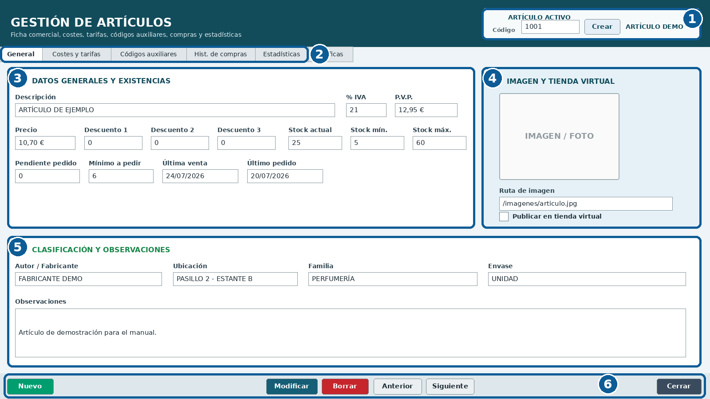
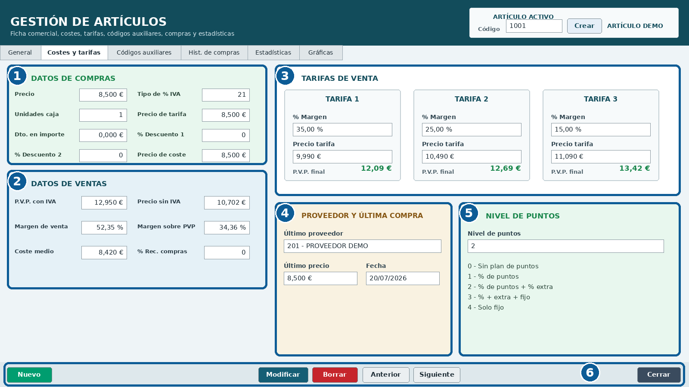
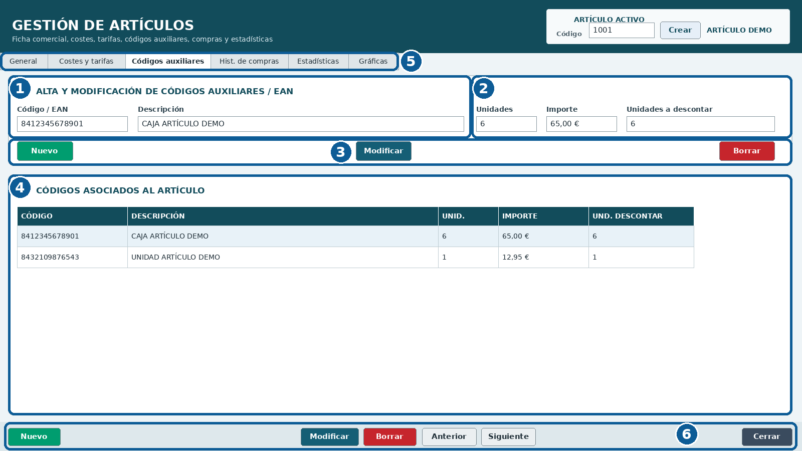
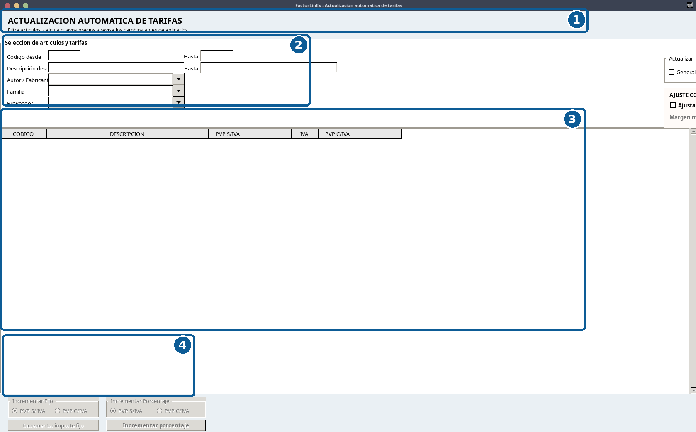
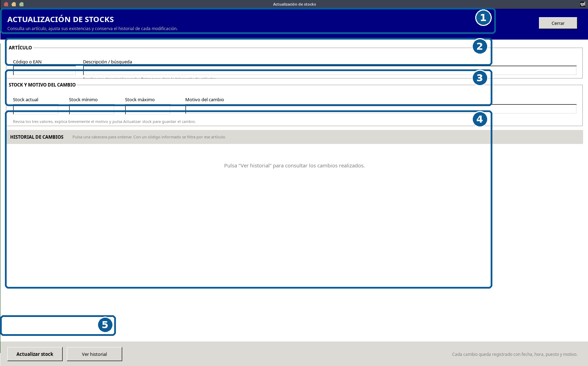

Artículos, familias y tarifas
Edición v1.2 · Mantenimiento y solución de problemas ilustrado
4.1 Objetivo y visión general #
La ficha de Artículos concentra identificación, fiscalidad, precios, existencias, familia, proveedor, imagen, códigos auxiliares, costes, tarifas, compras, estadísticas y puntos. Un dato incorrecto puede afectar a Ventas, pedidos, márgenes, informes y reposición.

| N.º | Zona | Uso principal |
|---|---|---|
| 1 | Artículo activo | Código, creación y nombre del artículo cargado. |
| 2 | Pestañas | General, Costes y tarifas, Códigos auxiliares, compras, estadísticas y gráficas. |
| 3 | Datos y existencias | Descripción, IVA, precios, descuentos, stocks y fechas. |
| 4 | Imagen y tienda virtual | Fotografía y publicación en el canal virtual. |
| 5 | Clasificación | Fabricante, ubicación, familia, envase y observaciones. |
| 6 | Acciones | Nuevo, Modificar, Borrar, navegación y Cerrar. |
4.2 Acceso, alta y navegación #
El foco inicial debe situarse en Código. Consulte por código o búsqueda y confirme siempre el artículo activo antes de modificar.
- Introduzca el código principal o busque el artículo.
- Compruebe la descripción.
- Antes de crear, verifique que no exista con otro código o EAN.
- Complete descripción, IVA, PVP, familia, proveedor y datos de compra.
- Guarde con Modificar y revise los valores resultantes.
4.3 Datos generales, existencias y clasificación #
- La descripción debe ser clara en pantalla y documentos.
- El IVA afecta a PVP, facturación, estadísticas y VeriFactu.
- Revise PVP y descuentos para evitar márgenes negativos involuntarios.
- Stock actual, mínimo y máximo apoyan inventario y reposición.
- Familia y proveedor alimentan filtros, pedidos y estadísticas.
- Fabricante, ubicación y envase facilitan la logística.
- No publique en tienda virtual una ficha incompleta.
4.4 Costes, compras y tarifas de venta #

| N.º | Zona | Contenido |
|---|---|---|
| 1 | Datos de compras | Precio, IVA, unidades por caja, descuentos y coste A24. |
| 2 | Datos de ventas | PVP, precio sin IVA, márgenes y coste medio. |
| 3 | Tarifas | Márgenes y precios de tarifas adicionales. |
| 4 | Proveedor / última compra | Proveedor, fecha y precio registrado. |
| 5 | Nivel de puntos | Niveles 0 a 4. |
| 6 | Acciones | Guardado, navegación y cierre. |
- A24 es el coste de referencia para márgenes y clientes a precio de coste.
- A21 es el PVP sin IVA y A2 el PVP con IVA.
- El coste medio no siempre equivale al último coste.
- Revise las tarifas después de cambiar coste, IVA o precio general.
- Compruebe los descuentos de compra y su orden de aplicación.
4.5 Sistema de puntos por artículo #
El nivel del artículo solo produce efecto si el sistema está habilitado globalmente y en el cliente.
| Nivel | Comportamiento |
|---|---|
| 0 | Fuera de la promoción. |
| 1 | Promoción básica. |
| 2 | Porcentaje adicional. |
| 3 | Porcentaje y puntos fijos extra. |
| 4 | Puntos fijos únicamente. |
4.6 Códigos auxiliares y EAN #

| N.º | Zona | Uso |
|---|---|---|
| 1 | Identificación | EAN y descripción. |
| 2 | Conversión | Unidades, importe y descuento de stock. |
| 3 | Acciones de línea | Nuevo, Modificar y Borrar. |
| 4 | Grid | Códigos vinculados. |
| 5 | Pestaña activa | Acceso a Códigos auxiliares. |
| 6 | Acciones generales | Navegación y cierre. |
- EAN0 es el código leído y EAN1 apunta al código principal.
- Un EAN no debe apuntar a varios artículos.
- Revise cajas y packs que descuenten varias unidades.
- No asocie un EAN inexistente por aproximación.
4.7 Familias y proveedores #
A14 identifica la familia y A32 el proveedor principal. Ambos deben apuntar a registros existentes y utilizarse de forma coherente en búsqueda, pedidos, teclado táctil y estadísticas.
4.8 Actualización automática de tarifas #

| N.º | Zona | Uso |
|---|---|---|
| 1 | Cabecera | Identificación del proceso. |
| 2 | Filtros | Código, descripción, fabricante, familia y proveedor. |
| 3 | Resultado | Revisión antes de aplicar. |
| 4 | Reglas | Importe, porcentaje y PVP con/sin IVA. |
- Haga copia de seguridad.
- Defina el conjunto de artículos.
- Configure incremento, terminación 5/9/0 y margen mínimo.
- Revise una muestra con distintos IVA, costes y descuentos.
- Aplique y consulte el histórico.
4.9 Actualización de existencias e historial #

| N.º | Zona | Uso |
|---|---|---|
| 1 | Cabecera | Finalidad del módulo. |
| 2 | Artículo | Código/EAN y búsqueda. |
| 3 | Stock y motivo | Actual, mínimo, máximo y explicación. |
| 4 | Historial | Con código filtra; sin código muestra todos. |
| 5 | Acciones | Actualizar y Ver historial. |
- Sin código, Ver historial debe mostrar todos los cambios.
- Las columnas deben ordenarse por cabecera con flecha.
- Registre un motivo real para cada ajuste.
- Investigue fallos recurrentes en lugar de ocultarlos con ajustes manuales.
4.10 Historial de compras, estadísticas y gráficas #
Compare proveedores, cantidades, costes, coste medio y PVP. Las estadísticas de venta deben usar el precio real después de descuentos. Las gráficas deben acompañarse de valores legibles.
4.11 Modificación y borrado #
Modificar afecta a ventas futuras, pedidos, etiquetas, estadísticas y tienda virtual. El borrado se reserva para artículos creados por error y sin movimientos.
4.12 Lista de comprobación #
- Código y descripción inequívocos.
- IVA y precios con/sin IVA coherentes.
- Coste A24, coste medio y márgenes revisados.
- Familia A14 y proveedor A32 correctos.
- Stocks y tarifas especiales comprobados.
- Nivel de puntos correcto.
- EAN únicos y equivalencias correctas.
- Cambios masivos con copia e histórico.
- Cuadros, números y leyendas coinciden en todas las figuras.
- ESC respeta paneles y cambios pendientes.